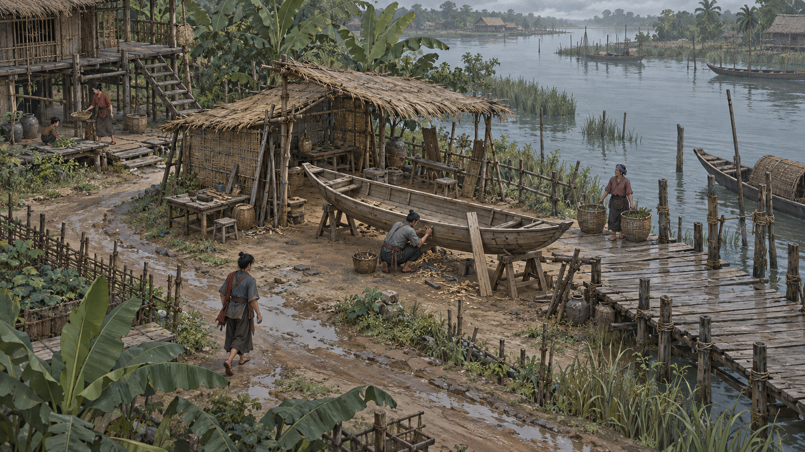

01 / A
Tranh góc chéo
Cảnh như một trang tranh đang sống. Lối đi và hoạt động nghề nghiệp được đặt trong một tổng thể.
Muốn kiểm tra: dễ quan sát không gian đến đâu, và nhân vật có bị nhỏ quá không?
BẾN VẠC / NGHIÊN CỨU HÌNH ẢNH
Thử hình dung bạn đang đứng ở một bến sông: thuyền chờ sửa, người thợ tiếp tục công việc, và một ngày sống bắt đầu.
Ảnh mô phỏng · Chưa phải game chạy · Chờ bạn chốt

Một chiếc thuyền đang chờ được sửa.
Góc chéo cho thấy lối đi, chỗ làm việc và dòng sông trong cùng một khung hình. Hướng này thử chất liệu tranh và cách phân lớp bằng màu tự nhiên.
Ba ảnh ý tưởng độc lập; không phải các camera của cùng một mô hình 3D.
Chưa tải được ảnh. Kiểm tra thư mục assets của bản thử nghiệm 06.
Đang xem phương án A.
Đổi ảnh bằng nút A / B / C hoặc phím 1 / 2 / 3. Chỉ giao diện xem ảnh có tương tác.
CÙNG MỘT CÂU HỎI / BA LỐI THỂ HIỆN
So sánh khoảng cách với nhân vật, cách đọc không gian và cảm giác chất liệu. Các đánh đổi dưới đây là giả thuyết thiết kế để bạn xem trước.
01 / A
Cảnh như một trang tranh đang sống. Lối đi và hoạt động nghề nghiệp được đặt trong một tổng thể.
Muốn kiểm tra: dễ quan sát không gian đến đâu, và nhân vật có bị nhỏ quá không?
02 / B
Ảnh giả lập cảm giác game 3D: gần người thợ, thấy sự cũ mới của gỗ và ánh sáng trong xưởng.
Muốn kiểm tra: có cảm giác nhập vai hơn không, và chi tiết gần có che mất toàn cảnh?
03 / C
Góc ngang 2.5D biến bến sông thành một sân khấu có chiều sâu; hoạt động nối nhau qua các lớp cảnh.
Muốn kiểm tra: hành động có rõ hơn không, và hướng này giới hạn khám phá ra sao?